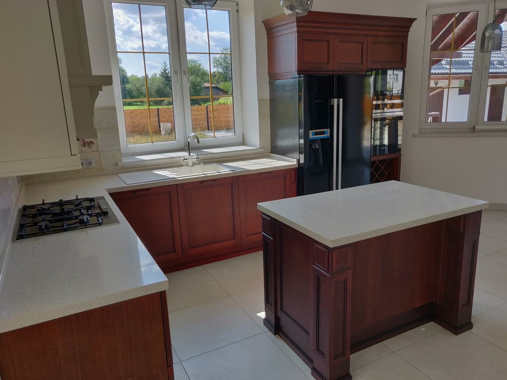
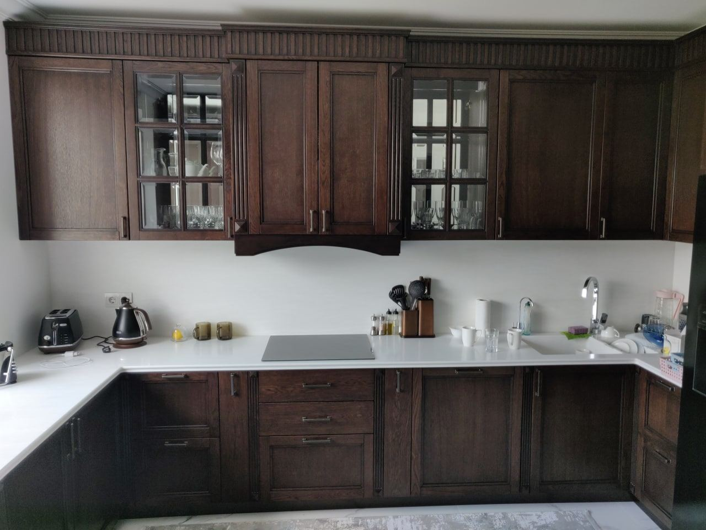

Знайдіть характер
Оберіть колекцію, відтінок і конфігурацію під свій інтер’єр.
Кухня, в якій хочеться залишатися. Обирайте зручне планування, природні фактури та деталі для щоденного життя.

Тепло дерев’яних фасадів. Зручність робочої поверхні. Ваше планування.
Почніть із того, що потрібно вашому інтер’єру.
 Світлі кухні ↗
Світлі кухні ↗
Класичні кухні ↗Добірка матеріалів для вашого інтер’єру. Фотографії ілюстративні; товари та ціни демонстраційні.
Кухня під ваші розміри. Вкажіть довжину, глибину й матеріал стільниці для попереднього деморозрахунку.
Оберіть колекцію, відтінок і конфігурацію під свій інтер’єр.
Для нестандартних виробів потрібен окремий прорахунок і підтвердження.
WooCommerce checkout, оплата та доставка розробляються наступним етапом.